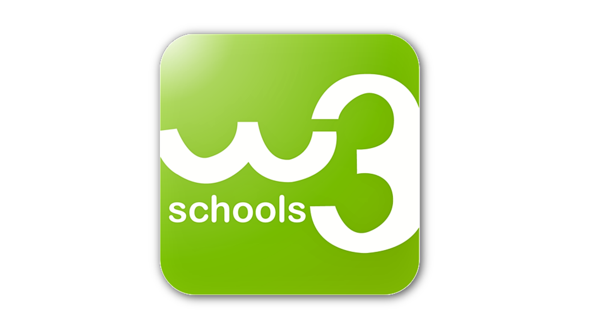

Angular
One Framework. Mobile&Desktop
Angular는 현재 다이렉트 및 영업가족에게 제공하는 모바일 앱/웹 개발에 사용되고 있다.
다이렉트에 적용된 것은 명확히는 AngularJS로 초기버전으로 Angualr와 구분된다.
구글에서 만든 원소스 멀티 플랫폼을 지원하는 개발언어 또는 프레임이라고 이해하면 된다.
React나 Vue에 비해 엔터프라이즈에서 사용하는데 더 적합할 것으로 판단된다.

W3C School
웹개발의 앞단 개발의 가장 기본이 되는 기술은 HTML, CSS, JavaScript 이다. 웹소스를 해석하는 브라우저는
이 세가지 언어만 해석할 수 있다. 그래서 유행하는 많은 프레임과 랭귀지들도 결국에는 웹팩을 통해 JavaScript로
변환해서 디폴로이가 된다. 그래서 우리는 가장 기본이 되는 기술에 대한 기초적인 공부를 하였으며, 이를
체계적으로 해줄수있도록 만든 사이트가 w3schools이다. 온라인상에서 바로 해볼수 있기 떄문에 모바일로도
학습이 가능하다. 다만, 영어다.

웹 호스팅
Netlify는 정적 웹 사이트를위한 호스팅 및 서버리스 백엔드 서비스를 제공하는 샌프란시스코 기반 클라우드 컴퓨팅 회사입니다. 우리는 이 회사의 서비스를 하여 아주 간단히 우리가 만든 웹사이트를 공개하고 필요한 URL을 받아 여러분과 공유할 수 있었습니다.
Watch